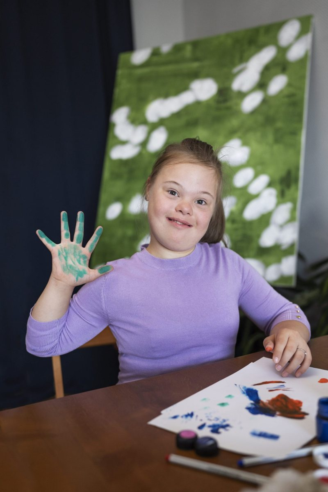
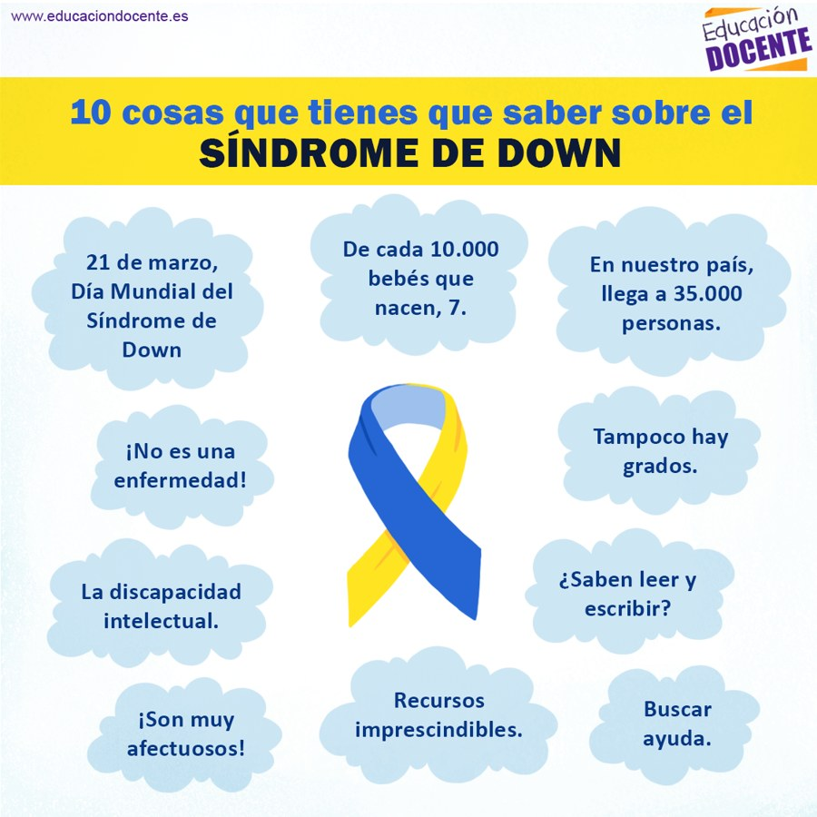
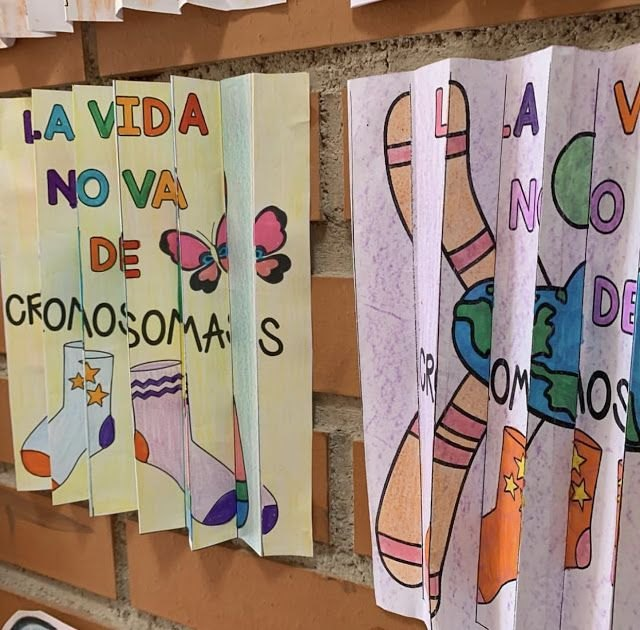

AU
Fundación
hace 1 h
Fijado
Avisos
Este viernes no hay actividades en la sede: el equipo tiene jornada pedagógica. Retomamos el lunes a las 8:00 a. m.

¡Miren esa mano! Sofía terminó hoy su primera pintura en el taller de artes y no se la quería lavar hasta que todos la vieran.

Para las familias que recién llegan: diez ideas básicas sobre el síndrome de Down. Las cifras son de España; los datos de Colombia los dejo en los comentarios.
Imagen: educaciondocente.es
Video · 0:48El grupo de los jueves montó su exposición «La vida no va de cromosomas». Así quedaron los acordeones, uno por cada participante.
¿Alguien conoce terapia de lenguaje en Manizales que atienda por EPS? Buscamos para un niño de 6 años.